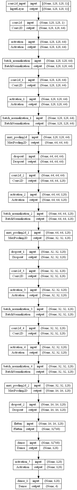
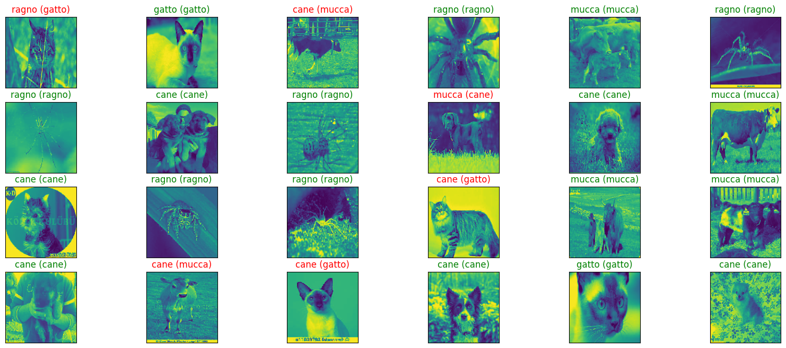

Reconocimiento de Animales#
import numpy as np
import pandas as pd
import tensorflow as tf
import os
from keras.preprocessing.image import ImageDataGenerator
from tensorflow.keras.utils import load_img
from keras.layers import Conv2D, Dense, BatchNormalization, Activation, Dropout, MaxPooling2D, Flatten
from tensorflow.keras.optimizers import Adam, RMSprop, SGD
from keras.callbacks import ModelCheckpoint,EarlyStopping
import datetime
from keras import regularizers
import matplotlib.pyplot as plt
from keras.utils.vis_utils import plot_model
from keras import backend
import re
import warnings
warnings.filterwarnings('ignore')
from sklearn.preprocessing import LabelEncoder
from sklearn.model_selection import train_test_split
from PIL import Image
from tensorflow.keras.models import load_model
import itertools
print(tf.__version__)
2.10.1
tf.test.is_gpu_available()
WARNING:tensorflow:From C:\Users\Rirub\AppData\Local\Temp\ipykernel_23840\337460670.py:1: is_gpu_available (from tensorflow.python.framework.test_util) is deprecated and will be removed in a future version.
Instructions for updating:
Use `tf.config.list_physical_devices('GPU')` instead.
True
path = 'D:/datasets/ANIMALES RED/'
data = {"imgpath": [] , "labels": [] }
category = os.listdir(path)
for folder in category:
folderpath = os.path.join(path , folder)
filelist = os.listdir(folderpath)
for file in filelist:
fpath = os.path.join(folderpath, file)
data["imgpath"].append(fpath)
data["labels"].append(folder)
df = pd.DataFrame(data)
#Convert labels to numbers
lb = LabelEncoder()
df['encoded_labels'] = lb.fit_transform(df['labels'])
## Dataset
df.sample(n=10, random_state=1)
| imgpath | labels | encoded_labels | |
|---|---|---|---|
| 4739 | D:/datasets/ANIMALES RED/mucca\OIP-GdxI-WFmFt9... | mucca | 2 |
| 5605 | D:/datasets/ANIMALES RED/mucca\OIP-vKiBGH0ARNI... | mucca | 2 |
| 5495 | D:/datasets/ANIMALES RED/mucca\OIP-TiiKQwMuSMj... | mucca | 2 |
| 4205 | D:/datasets/ANIMALES RED/mucca\OIP-5HZ3RpK3kS_... | mucca | 2 |
| 3228 | D:/datasets/ANIMALES RED/gatto\468.jpeg | gatto | 1 |
| 2745 | D:/datasets/ANIMALES RED/gatto\1552.jpeg | gatto | 1 |
| 3611 | D:/datasets/ANIMALES RED/gatto\ea30b0062af21c2... | gatto | 1 |
| 3491 | D:/datasets/ANIMALES RED/gatto\896.jpeg | gatto | 1 |
| 1185 | D:/datasets/ANIMALES RED/cane\OIP-skAoh56HSQvD... | cane | 0 |
| 74 | D:/datasets/ANIMALES RED/cane\OIP-LgbZBRDDbmMm... | cane | 0 |
print("Shape of the dataset: ", df.shape)
print("_______________________________________")
print("Number of null values: ")
print(df.isnull().sum())
print("_______________________________________")
print("Number of unique values: ")
print(df.nunique())
print("---------------------------------------")
print("Number of images per category : ")
print(df.labels.value_counts())
Shape of the dataset: (7997, 3)
_______________________________________
Number of null values:
imgpath 0
labels 0
encoded_labels 0
dtype: int64
_______________________________________
Number of unique values:
imgpath 7997
labels 4
encoded_labels 4
dtype: int64
---------------------------------------
Number of images per category :
labels
cane 2347
ragno 2116
mucca 1866
gatto 1668
Name: count, dtype: int64
Test y Entrenamiento#
train_df, Temp_df = train_test_split(df, train_size= 0.75 , shuffle=True, random_state=23)
valid_df , test_df = train_test_split(Temp_df , train_size= 0.6 , shuffle=True, random_state=23)
train_df = train_df.reset_index(drop=True)
valid_df = valid_df.reset_index(drop=True)
test_df = test_df.reset_index(drop=True)
print("----------Train-------------")
print(train_df[["imgpath", "labels"]].head(5))
print(train_df.shape)
print("--------Validation----------")
print(valid_df[["imgpath", "labels"]].head(5))
print(valid_df.shape)
print("----------Test--------------")
print(test_df[["imgpath", "labels"]].head(5))
print(test_df.shape)
----------Train-------------
imgpath labels
0 D:/datasets/ANIMALES RED/cane\OIP-Y6B78QaOUn4q... cane
1 D:/datasets/ANIMALES RED/ragno\OIP-TucUistkkPW... ragno
2 D:/datasets/ANIMALES RED/ragno\OIP-Uk9jVHuzqKq... ragno
3 D:/datasets/ANIMALES RED/mucca\OIP-vSpxIjbOOji... mucca
4 D:/datasets/ANIMALES RED/gatto\1477.jpeg gatto
(5997, 3)
--------Validation----------
imgpath labels
0 D:/datasets/ANIMALES RED/ragno\OIP-wcYX17cyRNv... ragno
1 D:/datasets/ANIMALES RED/ragno\OIP-szmk-9ImYlZ... ragno
2 D:/datasets/ANIMALES RED/ragno\OIP-rX9_RRCh7Te... ragno
3 D:/datasets/ANIMALES RED/ragno\OIP-MM41xzjWNxV... ragno
4 D:/datasets/ANIMALES RED/ragno\OIP-olemVESRVfB... ragno
(1200, 3)
----------Test--------------
imgpath labels
0 D:/datasets/ANIMALES RED/ragno\OIP-uas3AwpS29H... ragno
1 D:/datasets/ANIMALES RED/gatto\301.jpeg gatto
2 D:/datasets/ANIMALES RED/ragno\OIP-QCHOnriD3Qf... ragno
3 D:/datasets/ANIMALES RED/cane\OIP-pXRE6P-U4ORc... cane
4 D:/datasets/ANIMALES RED/mucca\OIP-dMeYaM8lBN6... mucca
(800, 3)
# Visualización de las distribuciones de clases en el conjunto de entrenamiento y prueba
plt.figure(figsize=(12, 5))
train_df['labels'].value_counts().transpose().plot(kind='bar')
plt.title('Distribución de Clases')
Text(0.5, 1.0, 'Distribución de Clases')
# Visualización de las distribuciones de clases en el conjunto de entrenamiento y prueba
plt.figure(figsize=(12, 5))
test_df['labels'].value_counts().transpose().plot(kind='bar')
plt.title('Distribución de Clases - Conjunto de Test')
Text(0.5, 1.0, 'Distribución de Clases - Conjunto de Test')
plt.figure(figsize=(15,12))
for i, label in enumerate(valid_df['labels'].unique()):
# Selecciona una fila aleatoria con la etiqueta actual
row = df[df['labels'] == label].sample(n=1).iloc[0]
# Carga la imagen y la muestra
image_path = row['imgpath']
image = Image.open(image_path)
# Configura la subfigura actual
plt.subplot(5, 5, i + 1)
plt.imshow(image)
plt.title(label)
plt.axis('off')

Creating Dataloaders#
BATCH_SIZE = 32
IMAGE_SIZE = (128, 128)
generador = ImageDataGenerator(rescale=1./255, horizontal_flip=True)
training_set = generador.flow_from_dataframe(dataframe=train_df,
x_col='imgpath',
y_col='labels',
batch_size=BATCH_SIZE,
target_size=IMAGE_SIZE,
shuffle=True,
color_mode='grayscale',
class_mode='categorical')
validation_set = generador.flow_from_dataframe(dataframe=valid_df,
x_col='imgpath',
y_col='labels',
batch_size=BATCH_SIZE,
target_size=IMAGE_SIZE,
shuffle=True,
color_mode='grayscale',
class_mode='categorical')
test_set = generador.flow_from_dataframe(dataframe=test_df,
x_col='imgpath',
y_col='labels',
batch_size=BATCH_SIZE,
target_size=IMAGE_SIZE,
shuffle=True,
color_mode='grayscale',
class_mode='categorical')
Found 5997 validated image filenames belonging to 4 classes.
Found 1200 validated image filenames belonging to 4 classes.
Found 800 validated image filenames belonging to 4 classes.
training_set.class_indices
{'cane': 0, 'gatto': 1, 'mucca': 2, 'ragno': 3}
Arquitectura#
weight_decay = 1e-4
num_classes = 4
model = tf.keras.models.Sequential()
model.add(Conv2D(64, (4,4), padding='same', kernel_regularizer=regularizers.l2(weight_decay), input_shape=(128, 128, 1)))
model.add(Activation('elu'))
model.add(BatchNormalization())
model.add(Conv2D(64, (4,4), padding='same', kernel_regularizer=regularizers.l2(weight_decay)))
model.add(Activation('elu'))
model.add(BatchNormalization())
model.add(MaxPooling2D(pool_size=(2,2)))
model.add(Dropout(0.2))
model.add(Conv2D(128, (4,4), padding='same', kernel_regularizer=regularizers.l2(weight_decay)))
model.add(Activation('elu'))
model.add(BatchNormalization())
model.add(MaxPooling2D(pool_size=(2,2)))
model.add(Dropout(0.3))
model.add(Conv2D(128, (4,4), padding='same', kernel_regularizer=regularizers.l2(weight_decay)))
model.add(Activation('elu'))
model.add(BatchNormalization())
model.add(Conv2D(128, (4,4), padding='same', kernel_regularizer=regularizers.l2(weight_decay)))
model.add(Activation('elu'))
model.add(BatchNormalization())
model.add(MaxPooling2D(pool_size=(2,2)))
model.add(Dropout(0.4))
model.add(Flatten())
model.add(Dense(128, activation="linear"))
model.add(Activation('elu'))
model.add(Dense(num_classes, activation='softmax'))
model.compile(loss='categorical_crossentropy', optimizer=Adam(0.001), metrics=['accuracy'])
model.summary()
Model: "sequential"
_________________________________________________________________
Layer (type) Output Shape Param #
=================================================================
conv2d (Conv2D) (None, 128, 128, 64) 1088
activation (Activation) (None, 128, 128, 64) 0
batch_normalization (BatchN (None, 128, 128, 64) 256
ormalization)
conv2d_1 (Conv2D) (None, 128, 128, 64) 65600
activation_1 (Activation) (None, 128, 128, 64) 0
batch_normalization_1 (Batc (None, 128, 128, 64) 256
hNormalization)
max_pooling2d (MaxPooling2D (None, 64, 64, 64) 0
)
dropout (Dropout) (None, 64, 64, 64) 0
conv2d_2 (Conv2D) (None, 64, 64, 128) 131200
activation_2 (Activation) (None, 64, 64, 128) 0
batch_normalization_2 (Batc (None, 64, 64, 128) 512
hNormalization)
max_pooling2d_1 (MaxPooling (None, 32, 32, 128) 0
2D)
dropout_1 (Dropout) (None, 32, 32, 128) 0
conv2d_3 (Conv2D) (None, 32, 32, 128) 262272
activation_3 (Activation) (None, 32, 32, 128) 0
batch_normalization_3 (Batc (None, 32, 32, 128) 512
hNormalization)
conv2d_4 (Conv2D) (None, 32, 32, 128) 262272
activation_4 (Activation) (None, 32, 32, 128) 0
batch_normalization_4 (Batc (None, 32, 32, 128) 512
hNormalization)
max_pooling2d_2 (MaxPooling (None, 16, 16, 128) 0
2D)
dropout_2 (Dropout) (None, 16, 16, 128) 0
flatten (Flatten) (None, 32768) 0
dense (Dense) (None, 128) 4194432
activation_5 (Activation) (None, 128) 0
dense_1 (Dense) (None, 4) 516
=================================================================
Total params: 4,919,428
Trainable params: 4,918,404
Non-trainable params: 1,024
_________________________________________________________________
plot_model(model, to_file='model_cnn.png', show_shapes=True, show_layer_names=True)

checkpointer = [EarlyStopping(monitor = 'val_accuracy', verbose = 1, restore_best_weights=True,mode="max",patience = 6),
ModelCheckpoint(
filepath='model.weights.best.hdf5',
monitor="val_accuracy",
verbose=1,
save_best_only=True,
mode="max")]
steps_per_epoch = training_set.n // training_set.batch_size
validation_steps = validation_set.n // validation_set.batch_size
history = model.fit(x=training_set,
validation_data=validation_set,
epochs=75,
callbacks=[checkpointer],
steps_per_epoch=steps_per_epoch,
validation_steps=validation_steps)
Epoch 1/75
187/187 [==============================] - ETA: 0s - loss: 2.3050 - accuracy: 0.4069
Epoch 1: val_accuracy improved from -inf to 0.31757, saving model to model.weights.best.hdf5
187/187 [==============================] - 165s 826ms/step - loss: 2.3050 - accuracy: 0.4069 - val_loss: 3.2007 - val_accuracy: 0.3176
Epoch 2/75
187/187 [==============================] - ETA: 0s - loss: 1.1331 - accuracy: 0.5108
Epoch 2: val_accuracy did not improve from 0.31757
187/187 [==============================] - 48s 258ms/step - loss: 1.1331 - accuracy: 0.5108 - val_loss: 1.9649 - val_accuracy: 0.3167
Epoch 3/75
187/187 [==============================] - ETA: 0s - loss: 1.0004 - accuracy: 0.5807
Epoch 3: val_accuracy improved from 0.31757 to 0.45777, saving model to model.weights.best.hdf5
187/187 [==============================] - 50s 267ms/step - loss: 1.0004 - accuracy: 0.5807 - val_loss: 2.0979 - val_accuracy: 0.4578
Epoch 4/75
187/187 [==============================] - ETA: 0s - loss: 0.8918 - accuracy: 0.6397
Epoch 4: val_accuracy improved from 0.45777 to 0.62331, saving model to model.weights.best.hdf5
187/187 [==============================] - 52s 278ms/step - loss: 0.8918 - accuracy: 0.6397 - val_loss: 0.9543 - val_accuracy: 0.6233
Epoch 5/75
187/187 [==============================] - ETA: 0s - loss: 0.8323 - accuracy: 0.6620
Epoch 5: val_accuracy improved from 0.62331 to 0.63176, saving model to model.weights.best.hdf5
187/187 [==============================] - 53s 284ms/step - loss: 0.8323 - accuracy: 0.6620 - val_loss: 0.9782 - val_accuracy: 0.6318
Epoch 6/75
187/187 [==============================] - ETA: 0s - loss: 0.7807 - accuracy: 0.6885
Epoch 6: val_accuracy improved from 0.63176 to 0.66385, saving model to model.weights.best.hdf5
187/187 [==============================] - 54s 289ms/step - loss: 0.7807 - accuracy: 0.6885 - val_loss: 0.8279 - val_accuracy: 0.6639
Epoch 7/75
187/187 [==============================] - ETA: 0s - loss: 0.7210 - accuracy: 0.7184
Epoch 7: val_accuracy did not improve from 0.66385
187/187 [==============================] - 55s 295ms/step - loss: 0.7210 - accuracy: 0.7184 - val_loss: 0.8631 - val_accuracy: 0.6605
Epoch 8/75
187/187 [==============================] - ETA: 0s - loss: 0.6806 - accuracy: 0.7373
Epoch 8: val_accuracy did not improve from 0.66385
187/187 [==============================] - 56s 301ms/step - loss: 0.6806 - accuracy: 0.7373 - val_loss: 1.0503 - val_accuracy: 0.5954
Epoch 9/75
187/187 [==============================] - ETA: 0s - loss: 0.6467 - accuracy: 0.7591
Epoch 9: val_accuracy improved from 0.66385 to 0.72297, saving model to model.weights.best.hdf5
187/187 [==============================] - 57s 305ms/step - loss: 0.6467 - accuracy: 0.7591 - val_loss: 0.7655 - val_accuracy: 0.7230
Epoch 10/75
187/187 [==============================] - ETA: 0s - loss: 0.6019 - accuracy: 0.7742
Epoch 10: val_accuracy did not improve from 0.72297
187/187 [==============================] - 62s 328ms/step - loss: 0.6019 - accuracy: 0.7742 - val_loss: 0.8000 - val_accuracy: 0.6824
Epoch 11/75
187/187 [==============================] - ETA: 0s - loss: 0.5861 - accuracy: 0.7814
Epoch 11: val_accuracy did not improve from 0.72297
187/187 [==============================] - 63s 339ms/step - loss: 0.5861 - accuracy: 0.7814 - val_loss: 1.1027 - val_accuracy: 0.6056
Epoch 12/75
187/187 [==============================] - ETA: 0s - loss: 0.5565 - accuracy: 0.8003
Epoch 12: val_accuracy improved from 0.72297 to 0.73733, saving model to model.weights.best.hdf5
187/187 [==============================] - 64s 340ms/step - loss: 0.5565 - accuracy: 0.8003 - val_loss: 0.7498 - val_accuracy: 0.7373
Epoch 13/75
187/187 [==============================] - ETA: 0s - loss: 0.5260 - accuracy: 0.8102
Epoch 13: val_accuracy did not improve from 0.73733
187/187 [==============================] - 64s 343ms/step - loss: 0.5260 - accuracy: 0.8102 - val_loss: 0.9608 - val_accuracy: 0.7027
Epoch 14/75
187/187 [==============================] - ETA: 0s - loss: 0.4956 - accuracy: 0.8300
Epoch 14: val_accuracy did not improve from 0.73733
187/187 [==============================] - 66s 351ms/step - loss: 0.4956 - accuracy: 0.8300 - val_loss: 0.8849 - val_accuracy: 0.6968
Epoch 15/75
187/187 [==============================] - ETA: 0s - loss: 0.4649 - accuracy: 0.8411
Epoch 15: val_accuracy improved from 0.73733 to 0.74240, saving model to model.weights.best.hdf5
187/187 [==============================] - 65s 348ms/step - loss: 0.4649 - accuracy: 0.8411 - val_loss: 0.8735 - val_accuracy: 0.7424
Epoch 16/75
187/187 [==============================] - ETA: 0s - loss: 0.4317 - accuracy: 0.8538
Epoch 16: val_accuracy did not improve from 0.74240
187/187 [==============================] - 65s 346ms/step - loss: 0.4317 - accuracy: 0.8538 - val_loss: 1.5586 - val_accuracy: 0.6706
Epoch 17/75
187/187 [==============================] - ETA: 0s - loss: 0.4078 - accuracy: 0.8707
Epoch 17: val_accuracy did not improve from 0.74240
187/187 [==============================] - 66s 351ms/step - loss: 0.4078 - accuracy: 0.8707 - val_loss: 0.9937 - val_accuracy: 0.7323
Epoch 18/75
187/187 [==============================] - ETA: 0s - loss: 0.3915 - accuracy: 0.8786
Epoch 18: val_accuracy improved from 0.74240 to 0.74662, saving model to model.weights.best.hdf5
187/187 [==============================] - 66s 355ms/step - loss: 0.3915 - accuracy: 0.8786 - val_loss: 0.9457 - val_accuracy: 0.7466
Epoch 19/75
187/187 [==============================] - ETA: 0s - loss: 0.3798 - accuracy: 0.8870
Epoch 19: val_accuracy improved from 0.74662 to 0.75169, saving model to model.weights.best.hdf5
187/187 [==============================] - 77s 412ms/step - loss: 0.3798 - accuracy: 0.8870 - val_loss: 0.8468 - val_accuracy: 0.7517
Epoch 20/75
187/187 [==============================] - ETA: 0s - loss: 0.3940 - accuracy: 0.8746
Epoch 20: val_accuracy did not improve from 0.75169
187/187 [==============================] - 78s 417ms/step - loss: 0.3940 - accuracy: 0.8746 - val_loss: 0.8894 - val_accuracy: 0.7441
Epoch 21/75
187/187 [==============================] - ETA: 0s - loss: 0.3468 - accuracy: 0.8954
Epoch 21: val_accuracy improved from 0.75169 to 0.78547, saving model to model.weights.best.hdf5
187/187 [==============================] - 70s 376ms/step - loss: 0.3468 - accuracy: 0.8954 - val_loss: 0.7460 - val_accuracy: 0.7855
Epoch 22/75
187/187 [==============================] - ETA: 0s - loss: 0.3206 - accuracy: 0.9108
Epoch 22: val_accuracy did not improve from 0.78547
187/187 [==============================] - 68s 362ms/step - loss: 0.3206 - accuracy: 0.9108 - val_loss: 0.9435 - val_accuracy: 0.7373
Epoch 23/75
187/187 [==============================] - ETA: 0s - loss: 0.3162 - accuracy: 0.9145
Epoch 23: val_accuracy did not improve from 0.78547
187/187 [==============================] - 70s 372ms/step - loss: 0.3162 - accuracy: 0.9145 - val_loss: 1.0224 - val_accuracy: 0.7432
Epoch 24/75
187/187 [==============================] - ETA: 0s - loss: 0.2921 - accuracy: 0.9204
Epoch 24: val_accuracy did not improve from 0.78547
187/187 [==============================] - 67s 359ms/step - loss: 0.2921 - accuracy: 0.9204 - val_loss: 1.3478 - val_accuracy: 0.6850
Epoch 25/75
187/187 [==============================] - ETA: 0s - loss: 0.3020 - accuracy: 0.9246
Epoch 25: val_accuracy did not improve from 0.78547
187/187 [==============================] - 66s 351ms/step - loss: 0.3020 - accuracy: 0.9246 - val_loss: 1.6840 - val_accuracy: 0.7078
Epoch 26/75
187/187 [==============================] - ETA: 0s - loss: 0.3152 - accuracy: 0.9251
Epoch 26: val_accuracy did not improve from 0.78547
187/187 [==============================] - 64s 344ms/step - loss: 0.3152 - accuracy: 0.9251 - val_loss: 1.1069 - val_accuracy: 0.7492
Epoch 27/75
187/187 [==============================] - ETA: 0s - loss: 0.2908 - accuracy: 0.9334Restoring model weights from the end of the best epoch: 21.
Epoch 27: val_accuracy did not improve from 0.78547
187/187 [==============================] - 67s 360ms/step - loss: 0.2908 - accuracy: 0.9334 - val_loss: 0.9700 - val_accuracy: 0.7812
Epoch 27: early stopping
training_loss = history.history['loss']
val_loss = history.history['val_loss']
plt.rcParams['figure.figsize'] = [10, 5]
plt.style.use(['default'])
# Create count of the number of epochs
epoch_count = range(1, len(training_loss) + 1)
# Visualize loss history
plt.plot(epoch_count, training_loss, 'r--')
plt.plot(epoch_count, val_loss, 'b-')
plt.legend(['Training Loss', 'Val Loss'])
plt.xlabel('Epoch')
plt.ylabel('Loss')
Text(0, 0.5, 'Loss')
training_accuracy = history.history['accuracy']
val_accuracy = history.history['val_accuracy']
# Create count of the number of epochs
epoch_count = range(1, len(training_accuracy) + 1)
# Visualize loss history
plt.plot(epoch_count, training_accuracy, 'r--')
plt.plot(epoch_count, val_accuracy, 'b-')
plt.legend(['Training Accuracy', 'Val Accuracy'])
plt.xlabel('Epoch')
plt.ylabel('Accuracy')
plt.ylim(top = 1)
(0.2858868524432182, 1.0)
model.save("cnn_model.h5")
print(f"Test accuracy = {model.evaluate(test_set ,batch_size=test_set.batch_size,steps=test_set.n // test_set.batch_size)[1]*100}%")
25/25 [==============================] - 37s 2s/step - loss: 0.7320 - accuracy: 0.8012
Test accuracy = 80.12499809265137%
Matriz de Confusion#
model = tf.keras.models.load_model('cnn_model.h5')
from sklearn.metrics import confusion_matrix
from sklearn.metrics import classification_report
y_pred = model.predict(training_set)
y_pred = np.argmax(y_pred, axis=1)
g_dict = training_set.class_indices
classes = list(g_dict.keys())
class_labels = {v:k for k,v in g_dict.items()}
# Confusion matrix
cm = confusion_matrix(training_set.classes, y_pred)
print('Confusion Matrix')
print(cm)
print('Classification Report')
target_names = list(class_labels.values())
print(classification_report(training_set.classes, y_pred, target_names=target_names))
plt.figure(figsize= (10, 10))
plt.imshow(cm, interpolation= 'nearest', cmap= plt.cm.Blues)
plt.title('Confusion Matrix - Training')
plt.colorbar()
tick_marks = np.arange(len(classes))
plt.xticks(tick_marks, classes, rotation= 45)
plt.yticks(tick_marks, classes)
thresh = cm.max() / 2.
for i, j in itertools.product(range(cm.shape[0]), range(cm.shape[1])):
plt.text(j, i, cm[i, j], horizontalalignment= 'center', color= 'black')
plt.tight_layout()
plt.ylabel('True Label')
plt.xlabel('Predicted Label')
plt.show()
188/188 [==============================] - 29s 153ms/step
Confusion Matrix
[[565 328 414 459]
[398 211 332 316]
[447 254 330 375]
[510 315 370 373]]
Classification Report
precision recall f1-score support
cane 0.29 0.32 0.31 1766
gatto 0.19 0.17 0.18 1257
mucca 0.23 0.23 0.23 1406
ragno 0.24 0.24 0.24 1568
accuracy 0.25 5997
macro avg 0.24 0.24 0.24 5997
weighted avg 0.24 0.25 0.25 5997
y_pred = model.predict(validation_set)
y_pred = np.argmax(y_pred, axis=1)
g_dict = validation_set.class_indices
classes = list(g_dict.keys())
class_labels = {v:k for k,v in g_dict.items()}
# Confusion matrix
cm = confusion_matrix(validation_set.classes, y_pred)
print('Confusion Matrix')
print(cm)
print('Classification Report')
target_names = list(class_labels.values())
print(classification_report(validation_set.classes, y_pred, target_names=target_names))
plt.figure(figsize= (10, 10))
plt.imshow(cm, interpolation= 'nearest', cmap= plt.cm.Blues)
plt.title('Confusion Matrix - Validacion')
plt.colorbar()
tick_marks = np.arange(len(classes))
plt.xticks(tick_marks, classes, rotation= 45)
plt.yticks(tick_marks, classes)
thresh = cm.max() / 2.
for i, j in itertools.product(range(cm.shape[0]), range(cm.shape[1])):
plt.text(j, i, cm[i, j], horizontalalignment= 'center', color= 'black')
plt.tight_layout()
plt.ylabel('True Label')
plt.xlabel('Predicted Label')
plt.show()
38/38 [==============================] - 5s 136ms/step
Confusion Matrix
[[105 62 87 82]
[ 75 53 64 62]
[101 45 55 68]
[109 54 75 103]]
Classification Report
precision recall f1-score support
cane 0.27 0.31 0.29 336
gatto 0.25 0.21 0.23 254
mucca 0.20 0.20 0.20 269
ragno 0.33 0.30 0.31 341
accuracy 0.26 1200
macro avg 0.26 0.26 0.26 1200
weighted avg 0.26 0.26 0.26 1200
y_pred = model.predict(test_set)
y_pred = np.argmax(y_pred, axis=1)
g_dict = test_set.class_indices
classes = list(g_dict.keys())
class_labels = {v:k for k,v in g_dict.items()}
# Confusion matrix
cm = confusion_matrix(test_set.classes, y_pred)
print('Confusion Matrix')
print(cm)
print('Classification Report')
target_names = list(class_labels.values())
print(classification_report(test_set.classes, y_pred, target_names=target_names))
plt.figure(figsize= (10, 10))
plt.imshow(cm, interpolation= 'nearest', cmap= plt.cm.Blues)
plt.title('Confusion Matrix - Test')
plt.colorbar()
tick_marks = np.arange(len(classes))
plt.xticks(tick_marks, classes, rotation= 45)
plt.yticks(tick_marks, classes)
thresh = cm.max() / 2.
for i, j in itertools.product(range(cm.shape[0]), range(cm.shape[1])):
plt.text(j, i, cm[i, j], horizontalalignment= 'center', color= 'black')
plt.tight_layout()
plt.ylabel('True Label')
plt.xlabel('Predicted Label')
plt.show()
25/25 [==============================] - 4s 146ms/step
Confusion Matrix
[[84 35 67 59]
[47 34 41 35]
[72 24 52 43]
[67 40 42 58]]
Classification Report
precision recall f1-score support
cane 0.31 0.34 0.33 245
gatto 0.26 0.22 0.23 157
mucca 0.26 0.27 0.26 191
ragno 0.30 0.28 0.29 207
accuracy 0.28 800
macro avg 0.28 0.28 0.28 800
weighted avg 0.28 0.28 0.28 800
Predicciones#
# next function assigns one batch to variables, i.e x_test,y_test will have 64 images
x_test,y_test = next(test_set)
predict = model.predict(x_test)
1/1 [==============================] - 0s 26ms/step
figure = plt.figure(figsize=(20, 8))
for i, index in enumerate(np.random.choice(x_test.shape[0], size=24, replace=False)):
ax = figure.add_subplot(4, 6, i + 1, xticks=[], yticks=[])
ax.imshow(np.squeeze(x_test[index]))
predict_index = class_labels[(np.argmax(predict[index]))]
true_index = class_labels[(np.argmax(y_test[index]))]
ax.set_title("{} ({})".format((predict_index),
(true_index)),
color=("green" if predict_index == true_index else "red"))
